가스기능장 (2007-04-01 기출문제)
1과목: 임의 구분
1. 다음 중 지구 온실효과를 일으키는 가장 큰 원인이 되는 가스는?
- O2
- CO2
- NO2
- N2
(정답률: 92%)

2. 염소가스는 수은법에 의한 식염의 전기분해로 얻을 수 있다. 이 때 염소 가스는 어느 곳에서 주로 발생하는가?
- 수은
- 소금물
- 나트륨
- 인조흑연(탄소판)
(정답률: 92%)
3. 메탄가스에 대한 설명으로 옳은 것은?
- 공기 중 폭발범위는 5~25%이다.
- 비점은 약 -42.1℃ 이다.
- 공기 중 메탄가스가 3% 함유된 혼합기체에 점화하면 폭발한다.
- 고온에서 니켈촉매를 사용하여 수증기와 작용하면 일산화탄소와 수소를 생성한다.
(정답률: 84%)
4. 다음 가스를 무거운 순서대로 옳게 나열한 것은?
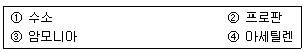
- ④＞③＞②＞①
- ④＞②＞③＞①
- ②＞④＞③＞①
- ②＞③＞④＞①
(정답률: 76%)
5. 내용적 40L 의 용기에 아세틸렌가스 10kg(액비중 0.613)을 충전할 때 다공성물질의 다공도를 90% 라고 하면 안전공간은 표준상태에서 약 얼마 정도인가? (단, 아세톤의 비중은 0.8이고, 주입된 아세톤량은 14kg이다.)
- 3.5%
- 4.5%
- 5.5%
- 6.5%
(정답률: 53%)
6. “어떤 계에 흡수된 열을 완전히 일로 전환할 수 있는 장치란 없다” 라는 법칙은 열역학 제 몇 법칙에 대한 것인가?
- 열역학 제0법칙
- 열역학 제1법칙
- 열역학 제2법칙
- 열역학 제3법칙
(정답률: 71%)
7. 압축기에 의한 LPG 이송방식에 대한 설명으로 옳은 것은?
- 펌프에 비해 충전시간이 길다.
- 잔가스 회수가 가능하다.
- 부탄의 경우에도 저온에서 재액화 현상이 일어나지 않는다.
- 베이퍼록 현상을 일으킨다.
(정답률: 63%)
8. 고압가스 일반제조 시설기준 중 가연성가스 제조설비의 전기설비는 방폭성능을 가지는 구조이어야 한다. 다음 중 제외 대상이 되는 가스는?
- 에탄
- 브롬화메탄
- 에틸아민
- 수소
(정답률: 87%)
9. 가스의 검출(檢出)에 대한 설명 중 틀린 것은?
- 황린을 공기 중에 노출하면 백색연기를 내면서 연소한다.
- 염소의 누출검출에는 암모니아수를 사용한다.
- 암모니아를 염산에 통하면 적갈색의 연기를 낸다.
- 이산화탄소를 석회수에 통하면 흰색침전물이 생성된다.
(정답률: 57%)
10. 저장탱크의 침하상태를 측정하여 침하량(h/L)이 몇 %를 초과하였을 때 저장탱크의 사용을 중지하고 적절한 조치를 하여야 하는가?
- 0.5
- 1
- 3
- 5
(정답률: 67%)
11. 에탄 1mol을 완전연소 시켰을 때 발열량(Q)은 몇 kcal/mol인가? (단, CO2(g), H2O(g), C2H6(g)의 생성열은 1mol 당 각각 94.1kcal, 57.8kcal, 20.2kcal 이다.)
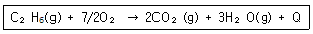
- 214.4
- 259.4
- 301.4
- 341.4
(정답률: 68%)
12. 도시가스 사업법에서 정의하는 다음 용어의 설명 중 틀린 것은?
- 배관이라 함은 본관, 공급관, 내관을 말한다.
- 본관이라 함은 공급관 옥외배관을 말한다.
- 내관이라 함은 가스사용자가 소유하고 있는 토지의 경계에서 연소기에 이르는 배관을 말한다.
- 액화가스라 함은 사용의 온도에서 압력이 0.2MPa 이상이 되는 것을 말한다.
(정답률: 89%)
13. 고압가스안전관리법에서 정한 용기제조자의 수리범위에 해당되는 것은?
- 냉동기 용접부분의 용접가공
- 냉동기 부속품의 교체, 가공
- 특정설비의 부속품 교체
- 아세틸렌 용기 내의 다공질물 교체
(정답률: 84%)
14. 가스에 대한 품질검사기준으로 옳은 것은?
- 산소는 발연황산시약을 사용한 오르잣드법에 의한 시험에서 순도가 98% 이상이고, 용기 내의 가스충전 압력이 35℃에서 11.8 MPa 이상일 것.
- 수소는 하이드로썰파이드 시약을 사용한 오르잣드법에 의한 시험에서 99.5% 이상일 것.
- 아세틸렌은 브롬시약을 사용한 뷰렛법에 의한 시험에서 순도가 98% 이상이고, 질산은 시약을 사용한 정성시험에서 합격한 것일 것.
- 산소는 동ㆍ암모니아 시약을 사용한 오르잣드법에 의한 시험에서 순도가 98.5% 이상이고, 용기내의 가스충전압력이 35℃에서 11.8MPa 이상일 것.
(정답률: 50%)
15. 가스의 압력을 사용기구에 맞는 압력으로 감압하여 공급하는데 사용하는 정압기의 기본 구조로서 옳은 것은?
- 다이아프램, 스프링(또는 분동) 및 메인밸브로 구성되어 있다.
- 팽창밸브, 회전날개, 케이싱(casing) 으로 구성되어 있다.
- 흡입밸브와 토출밸브로 구성되어 있다.
- 액송펌프와 메인밸브로 구성되어 있다.
(정답률: 88%)
16. 부식이 특정한 부분에 집중하는 형식으로 부식속도가 크므로 위험성이 높고 장치에 중대한 손상을 미치는 부식의 형태는?
- 국부부식
- 전면부식
- 선택부식
- 입계부식
(정답률: 91%)
17. 가스엔진구동펌프(GHP)에 대한 설명 중 옳지 않은 것은?
- 부분부하 특성이 우수하다.
- 난방시 GHP의 기동과 동시에 난방이 가능하다.
- 외기온도 변동에 영향이 많다.
- 구조가 복잡하고 유지관리가 어렵다.
(정답률: 80%)
18. 온도 25℃, 압력 1atm에서 이상기체 1mol 의 부피는 몇 m3인가?
- 12.23
- 24.44
- 1.22×10-2
- 2.44×10-2
(정답률: 49%)
19. “기체는 압력이 일정할 때 체적은 절대온도에 비례한다.” 는 것과 관계가 깊은 법칙은?
- 샤를의 법칙
- 보일의 법칙
- 아보가드로의 법칙
- 게이-뤼삭의 법칙
(정답률: 75%)
20. 고압밸브에 대한 설명 중 틀린 것은?
- 밸브시트는 내식성이 좋은 재료를 사용한다.
- 주조품을 깎아서 만든다.
- 글로브밸브는 기밀도가 크다.
- 슬루스밸브는 난방배관용으로 적합하다.
(정답률: 92%)
2과목: 임의 구분
21. 탄소강의 물리적 성질 중 탄소함유량의 증가에 따라 증가하는 것은?
- 전기저항
- 용융점
- 열팽창율
- 열전도도
(정답률: 59%)
22. 액화가스를 가열하여 기화시키는 기화장치의 성능기준으로 옳지 않은 것은?
- 접지 저항치는 10Ω 이하
- 안전장치는 내압시험(TP_)의 8/10 이하의 압력에서 작동
- 온수가열 방식의 온수는 80℃ 이하
- 증기가열 방식의 온도는 100℃ 이하
(정답률: 80%)
23. 산소(O2)의 성질에 대한 설명으로 옳은 것은?
- 비점은 약 -183℃이다.
- 임계압력은 약 33.5atm 이다.
- 임계온도는 약 -144℃이다.
- 분자량은 16이다.
(정답률: 84%)
24. 가스 중의 황화수소 제거법 중 알칼리물질로 암모니아 또는 탄산소다를 사용하며, 촉매는 티오비산염을 사용하는 방법은?
- 사이록스법
- 진공카보네이트법
- 후막스법
- 타카학스법
(정답률: 86%)
25. 다음 중 수동식 밸브의 표시기호로 옳은 것은?
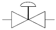
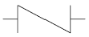
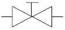
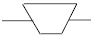
(정답률: 91%)
26. 다음 중 저온취성(메짐)을 일으키는 원소로 옳은 것은?
- Cr
- Si
- S
- P
(정답률: 90%)
27. 액화석유가스 저장탱크 설치방법에 있어서 지하에 묻는 경우의 기준으로 옳지 않은 것은?
- 저장탱크의 주위에는 마른모래를 채울 것.
- 저장탱크의 상부와 지면과의 거리는 60cm 이상으로 할 것.
- 저장탱크에 설치한 안전밸브에는 지면에서 5m 이상의 높이에 방출구가 있는 가스방출관을 설치할 것.
- 저장탱크를 2개 이상 인접하여 설치하는 경우에는 상호간 2m 이상의 거리를 유지할 것.
(정답률: 79%)
28. 표준상태에서 1L 의 A 가스의 무게는 1.9768g, B 가스의 무게는 1.2507g 이다. 이 두 기체의 확산속도비 VA/VB 는 약 얼마인가?
- 0.63
- 0.80
- 1.26
- 1.58
(정답률: 50%)
29. 다음 가스 중 중독을 막기 위한 허용한도가 잘못 짝지어진 것은?
- 암모니아-25ppm
- 일산화탄소-50ppm
- 이산화탄소-5000ppm
- 염소-10ppm
(정답률: 70%)
30. 27℃에서 1mol의 이상기체가 1atm에서 20atm 으로 정온가역적으로 압축되었다. 이 때 소요된 일의 양은 약 몇 cal/mol 인가?
- 1586
- 1686
- 1786
- 1886
(정답률: 48%)
31. 진탕형 오토클레이브(Auto Clave) 의 특성에 대한 설명으로 옳은 것은?
- 고압력에 사용할 수 없다.
- 가스누설의 가능성이 없다.
- 반응물의 오손이 많다.
- 뚜껑판의 뚫어진 구멍에 촉매가 들어갈 염려가 없다.
(정답률: 78%)
32. 가스크로마토그래피 검출기 중 H2O, CO2 등에는 감응하지 않으나, 탄화수소에서의 감도가 가장 좋은 검출기는?
- TCD
- FID
- ECD
- FPD
(정답률: 87%)
33. 암모니아 제조법 중 haber-bosch 법은 수소와 질소를 혼합하여 몇 도의 온도와 몇 기압의 압력으로 합성시키며 촉매는 무엇을 사용하는가?
- 450~500℃, 300atm, Fe, Al2O3
- 150~300℃, 10atm, 백금
- 1000℃, 800atm, NaCl
- 150~200℃, 450atm, 알루미늄과 은
(정답률: 83%)
34. 고압고무호스(투윈호스, 측도관 등)의 기준에 대한 설명 중 옳지 않은 것은?
- 고압고무호스는 안층ㆍ보강층ㆍ바깥층으로 되어 있고 안지름과 두께가 균일할 것.
- 투윈호스는 차압 0.⑤MPa 이하에서 정상적으로 작동하는 체크밸브를 부착할 것.
- 측도관의 집합관에 연결하는 이음쇠의 나사는 KS B 0222(관용테이퍼나사) 규정에 적합할 것.
- 투윈호스의 길이는 900mm 또는 1200mm 이고, 허용차는 +20mm, -10mm 로 할 것.
(정답률: 57%)
35. 주울(Joule)의 법칙에 의한 이상기체의 내부에너지는?
- 압력과 온도에만 의존한다.
- 체적과 온도에만 의존한다.
- 압력과 체적에만 의존한다.
- 온도에만 의존한다.
(정답률: 87%)
36. 도시가스사업자ㆍ특정가스 사용시설의 사용자가 정기검사를 받지 않았을 때의 벌칙 기준으로 옳은 것은?
- 1년 이하의 징역 또는 1000만원 이하의 벌금
- 1년 이하의 징역 또는 2000만원 이하의 벌금
- 2년 이하의 징역 또는 2000만원 이하의 벌금
- 3년 이하의 징역 또는 3000만원 이하의 벌금
(정답률: 58%)
37. 가스액화분리장치의 구성기기 중 축냉기의 축냉체로 주로 사용되는 것은?
- 구리
- 물
- 공기
- 자갈
(정답률: 90%)
38. 다음 중 수소의 제조법이 아닌 것은?
- 물의 전기분해
- 천연가스의 분해
- 이산화망간에 의한 과산화수소의 분해
- 수증기를 이용한 일산화탄소의 전화반응
(정답률: 57%)
39. 7:3 황동에 대한 설명으로 옳은 것은?
- Zn 70%에 Cu 30% 를 합금한 것으로 판, 봉, 선 등의 재료로 사용되며 방열기 부품에 쓰인다.
- Cu 70%에 Zn 30% 를 합금한 것으로 판, 봉, 선 등의 재료로 사용되며 방열기 부품에 쓰인다.
- Cu 70%에 Sn 30% 를 합금한 것으로 열가공에 적합하며 강도가 커서 볼트, 너트 등에 쓰인다.
- Sn 70%에 Cu 30% 를 합금한 것으로 열가공에 적합하며 강도가 커서 볼트, 너트 등에 쓰인다.
(정답률: 75%)
40. 공기액화분리장치의 구성기기 중 터보팽창기에 대한 설명으로 옳은 것은?
- 팽창비는 약 5정도이다.
- 회전수는 1000~2000rmp 정도이다.
- 처리가스량은 1000m3/h 정도이다.
- 복동식과 단동식으로 크게 구분된다.
(정답률: 52%)
3과목: 임의 구분
41. 위험성평가 기법 중 결함수분석(FTA)에 대한 설명으로 옳지 않은 것은?
- 정성적 분석이 가능하다.
- 재해현상과 재해원인과의 관련성의 해석이 가능하다.
- 정량적 해석이 가능하다.
- 귀납적 해석방법이다.
(정답률: 78%)
42. Pb3O4 를 400℃ 이상으로 가열하여 얻은 적색 분말을 끓인 아마인유에 섞은 것으로 철의 녹 방지를 위해 밑칠용으로 널리 사용되는 도료는?
- 합성수지 도료
- 산화철 도료
- 광명단(연단)도료
- 알루미늄 도료
(정답률: 83%)
43. 고압배관용 탄소강 강관의 기호는?
- SPPS
- SPPH
- SPLT
- SPHT
(정답률: 85%)
44. 가연성 가스를 제조하는 장치를 신설하여 기밀시험을 실시할 때 사용되는 가스가 아닌 것은?
- 공기
- 산소
- 질소
- 이산화탄소
(정답률: 74%)
45. 회전축의 전달동력이 20kW, 회전수 200rpm 이라면 이 전동축의 지름은 약 몇 mm 인가? (단, 축의 허용전단응력 τa = 30MPa 이다.)
- 25
- 35
- 45
- 55
(정답률: 45%)
46. 표준기압 1atm 은 몇 kgf/cm2 인가? (단, Hg의 밀도는 13595.1kg/m3, 중력가속도는 9.80665m/s2 이다.)
- 1.0332
- 1013.25
- 10332
- 101325
(정답률: 88%)
47. 가스켓 재료가 갖추어야 할 구비조건으로 가장 거리가 먼 것은?
- 충분한 강도를 가질 것.
- 유체에 의해 변질되지 않을 것.
- 유연성을 유지할 수 있을 것.
- 내유성, 내후성, 내마모성이 적을 것.
(정답률: 89%)
48. 질소 14g 과 수소 4g 을 혼합하여 내용적이 4000mL 인 용기에 충전하였더니 용기내의 온도가 100℃로 상승하였다. 용기내 수소의 부분압력은 약 몇 atm 인가? (단, 이 혼합기체는 이상기체로 간주한다.)
- 4.4
- 12.6
- 15.3
- 19.9
(정답률: 50%)
49. 유독가스 검지법에 의한 가스별 착색반응지와 색깔의 연결이 잘못된 것은?
- 일산화탄소 : 염화파라듐지 - 흑색
- 이산화질소 : KI전분지 - 청색
- 황화수소 : 연당지 - 황갈색
- 아세틸렌 : 리트머스시험지 - 청색
(정답률: 85%)
50. 아세틸렌은 용기에 충전 한 후 온도 15℃에서 압력이 얼마 이하로 될 때까지 정치하여야 하는가?
- 1.5MPa
- 2.5MPa
- 3.5MPa
- 4.5MPa
(정답률: 91%)
51. 시안화수소(HCN)에 대한 설명으로 옳은 것은?
- 허용농도는 10ppb 이다.
- 충전한 후 90일을 정치한 후 사용한다.
- 충전시 수분이 존재하면 안정하다.
- 누출 검지제는 질산구리벤젠지이다.
(정답률: 90%)
52. 다음 가스의 성질에 대한 설명 중 옳지 않은 것은?
- 암모니아는 산이나 할로겐과 잘 화합하고 고온, 고압에서는 강재를 침식한다.
- 산소는 반응성이 강한 가스로서 가연성 물질을 연소시키는 조연성(助然性)이 있다.
- 질소는 안정한 가스로서 불활성 가스라고도 하는데 고온하에서도 금속과 화합하지 않는다.
- 일산화탄소는 독성가스이고, 또한 가연성가스이다.
(정답률: 86%)
53. 고압가스를 제조하는 경우에 압축이 가능한 가스는?
- 가연성가스(H2, C2H2, C2H4 외의 것) : 6%, 산소 : 94%
- 산소 : 3%, 가연성가스(H2, C2H2, C2H4 외의 것) : 97%
- H2, C2H2, C2H4 : 3%, 산소 : 97%
- 산소 : 3%, H2, C2H2, C2H4 : 97%
(정답률: 71%)
54. 고압가스 저장시설 기준에 있어서 가연성가스의 저장능력이 15000m3 일 때 제1종 보호시설과의 안전거리 기준은?
- 10m
- 12m
- 17m
- 21m
(정답률: 56%)
55. 다음 중 관리의 사이클을 가장 올바르게 표시한 것은? (단, A : 조처, C : 검토, D : 실행, P : 계획)
- P→C→A→D
- P→A→C→D
- A→D→C→P
- P→D→C→A
(정답률: 89%)
56. 다음 중 절차계획에서 다루어지는 주요한 내용으로 가장 관계가 먼 것은?
- 각 작업의 소요시간
- 각 작업의 실시순서
- 각 작업에 필요한 기계와 공구
- 각 작업의 부하와 능력의 조정
(정답률: 66%)
57. 그림과 같은 계획공정도(Network)에서 주공정으로 옳은것은? (단, 화살표 밑의 숫자는 활동시간[단위:주]을 나타낸다.)
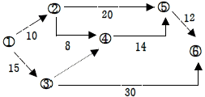
- ①-②-⑤-⑥
- ①-②-④-⑤-⑥
- ①-③-④-⑤-⑥
- ①-③-⑥
(정답률: 87%)
58. 모집단을 몇 개의 층으로 나누고 각 층으로부터 각각 랜덤하게 시료를 뽑는 샘플링 방법은?
- 층별 샘플링
- 2단계 샘플링
- 계통 샘플링
- 단순 샘플링
(정답률: 92%)
59. 작업자가 장소를 이동하면서 작업을 수행하는 경우에 그 과정을 가공, 검사, 운반, 저장 등의 기호를 사용하여 분석하는 것을 무엇이라 하는가?
- 작업자 연합작업분석
- 작업자 동작분석
- 작업자 미세분석
- 작업자 공정분석
(정답률: 80%)
60. u 관리도의 관리상한선과 관리하한선을 구하는 식으로 옳은 것은?
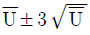
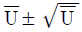
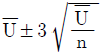
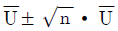
(정답률: 91%)